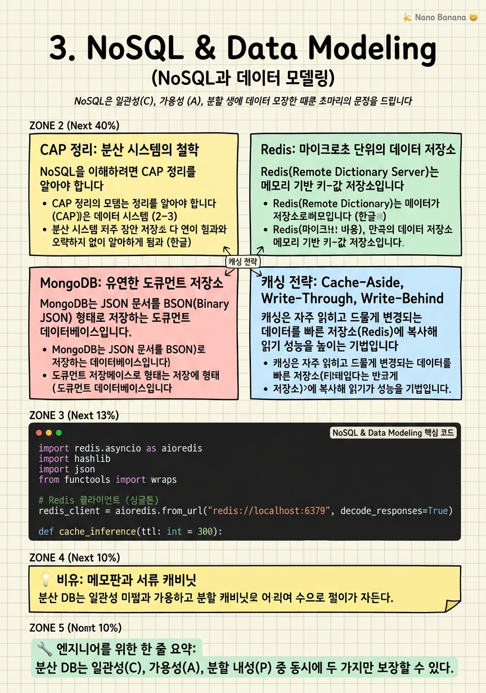

NoSQL & Data Modeling

🎯 학습 목표
- CAP 정리를 이해하고 NoSQL이 어떤 트레이드오프를 선택하는지 설명할 수 있다
- Redis를 사용해 API 응답 캐싱, 세션 저장, Rate Limiting을 구현할 수 있다
- MongoDB의 도큐먼트 모델과 집계 파이프라인을 활용할 수 있다
- 주어진 문제에 SQL과 NoSQL 중 어느 것이 적합한지 판단할 수 있다
- 캐시 무효화(Cache Invalidation) 전략의 종류와 트레이드오프를 설명할 수 있다
2000년대 후반, 구글·아마존·페이스북 같은 인터넷 기업들이 폭발적인 트래픽 앞에서 전통적인 RDBMS의 한계를 체감하기 시작했습니다. 수평 확장(서버를 여러 대로 늘리기)이 어렵고, 엄격한 스키마가 빠르게 변화하는 제품 요구사항을 따라가지 못했습니다. 이 문제를 해결하기 위해 등장한 것이 NoSQL(Not Only SQL) 데이터베이스입니다.
NoSQL은 단일 기술이 아닙니다. 키-값 저장소(Redis), 도큐먼트 저장소(MongoDB), 컬럼 패밀리 저장소(Cassandra), 그래프 데이터베이스(Neo4j) 등 다양한 종류가 있으며, 각각 특정 문제를 SQL보다 효율적으로 해결합니다.
AI 엔지니어에게 NoSQL은 특히 캐싱과 피처 스토어 맥락에서 중요합니다. Redis는 모델 추론 결과를 캐싱해 동일한 입력에 대한 중복 계산을 방지하고, MongoDB는 반정형 데이터(사용자 행동 로그, 모델 설정)를 유연하게 저장합니다.
핵심 내용
CAP 정리: 분산 시스템의 철학
NoSQL을 이해하려면 CAP 정리를 알아야 합니다. 분산 데이터베이스는 다음 세 가지 속성 중 동시에 두 가지만 보장할 수 있다는 이론입니다.
C(Consistency, 일관성) = 모든 노드가 같은 시간에 같은 데이터를 본다.
A(Availability, 가용성) = 모든 요청이 응답을 받는다(최신 데이터가 아닐 수도 있음).
P(Partition Tolerance, 분할 내성) = 네트워크가 끊겨도 시스템이 계속 작동한다.
네트워크 분할(P)은 현실에서 반드시 발생하므로, 실제 선택은 CP(일관성 + 분할 내성) vs AP(가용성 + 분할 내성) 입니다. PostgreSQL처럼 레플리케이션 설정에 따라 선택이 달라지는 경우도 있습니다. Redis Cluster는 기본적으로 AP에 가깝고, Zookeeper는 CP를 선택합니다.
Redis: 마이크로초 단위의 데이터 저장소
Redis(Remote Dictionary Server)는 메모리 기반 키-값 저장소입니다. 디스크가 아닌 RAM에 저장하기 때문에 읽기/쓰기가 마이크로초 단위입니다. 일반적인 PostgreSQL 쿼리가 수 밀리초인 것과 비교하면 100~1000배 빠릅니다.
Redis가 단순한 딕셔너리와 다른 점은 다양한 자료구조를 지원한다는 것입니다.
- String:
SET key value,GET key. TTL(Time-To-Live)로 자동 만료 설정 가능 - Hash: 필드-값 쌍의 컬렉션. 사용자 세션 저장에 적합
- List: 순서가 있는 문자열 목록. 메시지 큐 구현에 사용
- Sorted Set: 점수(score)로 정렬된 집합. 리더보드, Rate Limiting 구현에 사용
- Pub/Sub: 채널 기반 메시지 발행/구독. 실시간 알림에 사용
Redis는 AI 서빙에서 두 가지 중요한 역할을 합니다. 첫째, 결과 캐싱 — 동일한 입력(같은 텍스트 프롬프트, 같은 이미지 해시)에 대한 모델 추론 결과를 캐시해 GPU 비용을 줄입니다. 둘째, 피처 스토어 — 실시간 피처(사용자의 최근 클릭 10개)를 Redis에 저장해 낮은 레이턴시로 모델에 제공합니다.
MongoDB: 유연한 도큐먼트 저장소
MongoDB는 JSON 문서를 BSON(Binary JSON) 형태로 저장하는 도큐먼트 데이터베이스입니다. 테이블 스키마가 고정되지 않아, 각 도큐먼트가 다른 필드를 가질 수 있습니다.
MongoDB가 SQL보다 유리한 상황은 다음과 같습니다.
- 스키마가 자주 변경되는 초기 단계 제품
- 중첩된 구조(댓글 안에 대댓글)를 자연스럽게 저장하고 싶을 때
- 서로 다른 형태의 이벤트 로그를 단일 컬렉션에 저장할 때
그러나 MongoDB에도 한계가 있습니다. JOIN이 기본 지원되지 않아 관계형 데이터를 다루기 복잡합니다($lookup 사용). 트랜잭션은 4.0 이후 지원하지만 PostgreSQL보다 기능이 제한적입니다.
집계 파이프라인(Aggregation Pipeline) 은 MongoDB의 강력한 데이터 처리 기능입니다. \(match`, `\)group, \(project`, `\)sort, $limit를 체이닝해 SQL의 GROUP BY와 유사한 집계를 수행합니다.
캐싱 전략: Cache-Aside, Write-Through, Write-Behind
캐싱은 자주 읽히고 드물게 변경되는 데이터를 빠른 저장소(Redis)에 복사해 읽기 성능을 높이는 기법입니다. 세 가지 주요 전략이 있습니다.
Cache-Aside (Lazy Loading) 는 가장 흔한 패턴입니다.
- 캐시에 데이터가 있으면(Cache Hit) 바로 반환
- 없으면(Cache Miss) DB에서 조회 후 캐시에 저장하고 반환
장점: 실제로 필요한 데이터만 캐싱됩니다. 단점: 첫 요청은 항상 DB를 거칩니다(Cache Warming으로 해결).
Write-Through 는 쓰기 시 캐시와 DB를 동시에 업데이트합니다. 캐시 일관성이 높지만, 모든 쓰기에 캐시 비용이 추가됩니다.
Write-Behind (Write-Back) 는 캐시에만 먼저 쓰고, 비동기로 나중에 DB에 씁니다. 쓰기 속도가 매우 빠르지만, 캐시가 죽으면 데이터가 유실될 수 있습니다.
캐시 무효화(Cache Invalidation) 는 "컴퓨터 과학에서 가장 어려운 두 가지 문제"(네이밍, 캐시 무효화, off-by-one 오류) 중 하나입니다. TTL로 자동 만료하거나, 데이터 변경 이벤트에 명시적으로 삭제하는 방법이 있습니다.
SQL vs NoSQL: 선택 기준
SQL과 NoSQL 중 무엇을 선택할지는 종교 전쟁이 아니라 엔지니어링 판단입니다. 다음 기준으로 결정합니다.
| 기준 | SQL 선택 | NoSQL 선택 |
|---|---|---|
| 데이터 구조 | 명확하고 안정적인 스키마 | 유동적, 중첩 구조 |
| 관계 | 복잡한 JOIN 필요 | 비정규화 허용 |
| 일관성 | 강한 ACID 필요 | 최종 일관성 허용 |
| 확장 방향 | 수직 확장 (Scale-Up) | 수평 확장 (Scale-Out) |
| 쓰기 패턴 | 랜덤 쓰기·읽기 혼합 | 대용량 쓰기 위주 |
실무에서 대부분의 시스템은 SQL + NoSQL을 함께 씁니다. PostgreSQL이 주 데이터 저장소, Redis가 캐시·세션, Elasticsearch가 전문 검색(Full-text search)을 담당합니다.
💡 비유로 이해하기
데이터베이스의 차이를 이해하는 가장 좋은 비유입니다. Redis는 책상 위의 메모판입니다. 자주 보는 정보(오늘 일정, 자주 쓰는 전화번호)를 적어두면 바로 볼 수 있습니다. 그러나 메모판이 꽉 차면 오래된 것을 지워야 하고, 정전이 되면(TTL 만료 또는 서버 재시작) 내용이 사라집니다.
PostgreSQL은 잠금장치가 달린 서류 캐비닛입니다. 중요한 계약서, 거래 기록을 안전하게 보관합니다. 꺼내려면 서랍을 찾아야 하니 메모판보다 느리지만, 절대 사라지지 않습니다.
MongoDB는 플렉시블한 파일 박스입니다. 같은 박스 안에 다양한 모양의 서류(어떤 건 사진, 어떤 건 텍스트, 어떤 건 영수증)를 아무 형식이나 넣을 수 있습니다. 나중에 정리하기 불편할 수 있지만 빠르게 수집하기는 쉽습니다.
💻 코드 예시
Redis를 사용해 AI 모델 추론 결과를 캐싱하는 패턴입니다. 같은 입력에 대한 중복 GPU 연산을 방지하고, TTL로 캐시를 자동 만료합니다.
import redis.asyncio as aioredis
import hashlib
import json
from functools import wraps
# Redis 클라이언트 (싱글톤)
redis_client = aioredis.from_url("redis://localhost:6379", decode_responses=True)
def cache_inference(ttl: int = 300):
"""모델 추론 결과를 Redis에 캐시하는 데코레이터"""
def decorator(func):
@wraps(func)
async def wrapper(*args, **kwargs):
# 입력을 직렬화해 캐시 키 생성
cache_key = f"inference:{hashlib.sha256(
json.dumps({'args': str(args), 'kwargs': kwargs},
sort_keys=True).encode()
).hexdigest()[:16]}"
# 캐시 히트 확인
cached = await redis_client.get(cache_key)
if cached:
return json.loads(cached) # 캐시에서 즉시 반환
# 캐시 미스: 실제 추론 실행
result = await func(*args, **kwargs)
# 결과를 TTL과 함께 저장 (5분 후 자동 만료)
await redis_client.setex(cache_key, ttl, json.dumps(result))
return result
return wrapper
return decorator
@cache_inference(ttl=300)
async def run_model_inference(text: str, model_name: str) -> dict:
"""실제 GPU 추론 (캐시 미스 시에만 실행)"""
# 실제로는 모델 호출
return {"label": "positive", "score": 0.97, "model": model_name}
# Rate Limiting with Sorted Set
async def check_rate_limit(user_id: str, limit: int = 100, window: int = 60) -> bool:
key = f"rate_limit:{user_id}"
import time
now = time.time()
pipe = redis_client.pipeline()
pipe.zremrangebyscore(key, 0, now - window) # 오래된 기록 제거
pipe.zadd(key, {str(now): now}) # 현재 요청 추가
pipe.zcard(key) # 윈도우 내 요청 수 확인
pipe.expire(key, window) # TTL 갱신
results = await pipe.execute()
return results[2] <= limit # 제한 이하면 Truecache_inference 데코레이터는 함수 인자를 SHA-256으로 해싱해 캐시 키를 만듭니다. setex는 SET + EXPIRE의 원자적 명령으로 TTL과 함께 저장합니다. Rate Limiting은 Sorted Set의 ZREMRANGEBYSCORE로 윈도우 밖 기록을 정리하고 ZADD→ZCARD로 현재 카운트를 확인합니다. pipeline()으로 여러 명령을 한 번의 네트워크 요청으로 보냅니다.
🏭 현업에서의 평가
✅ 시니어가 보는 것
- 캐시 스탬피드(Cache Stampede) 문제를 알고 해결 방법(분산 락, 확률적 조기 만료)을 아는가
- Redis 메모리 정책(eviction policy)을 상황에 맞게 설정할 수 있는가
- 캐시 일관성 문제를 인식하고 허용 가능한 불일치 수준을 비즈니스 요구사항에 맞게 결정하는가
⚠️ 레드 플래그
- 캐시를 무제한으로 채워두고 메모리 관리를 하지 않는 경우
- 모든 데이터를 MongoDB에 넣으면 된다고 생각하는 경우
- 캐시와 DB 사이의 데이터 불일치 가능성을 고려하지 않는 경우
🎤 예상 인터뷰 질문
- Cache-Aside 패턴에서 여러 서버가 동시에 같은 캐시 미스를 처리할 때 발생하는 문제와 해결책은?
- Redis가 메모리가 꽉 찼을 때 어떻게 동작하나요? eviction policy 종류를 설명해보세요.
- AI 추론 캐시에서 같은 텍스트라도 캐시를 무효화해야 하는 상황은 언제인가요? (모델 업데이트)
✨ 핵심 요약
CAP 정리
분산 DB는 일관성(C), 가용성(A), 분할 내성(P) 중 동시에 두 가지만 보장할 수 있다.
Redis = 인메모리 파워
Redis는 마이크로초 레이턴시로 캐시·세션·Rate Limiting·Pub/Sub을 처리한다.
Cache-Aside 패턴
캐시 미스 시 DB 조회 후 캐시 저장. 가장 범용적인 캐싱 패턴이다.
TTL로 자동 관리
모든 캐시 항목에 TTL을 설정해 오래된 데이터가 자동으로 제거되도록 한다.
SQL + NoSQL 함께
PostgreSQL(주 저장소) + Redis(캐시) + Elasticsearch(검색)을 함께 쓰는 것이 일반적이다.
캐시 무효화 전략
캐시 무효화는 복잡하다. TTL 자동 만료와 명시적 삭제를 상황에 맞게 조합한다.